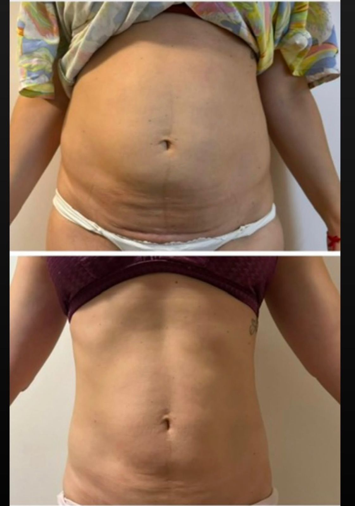
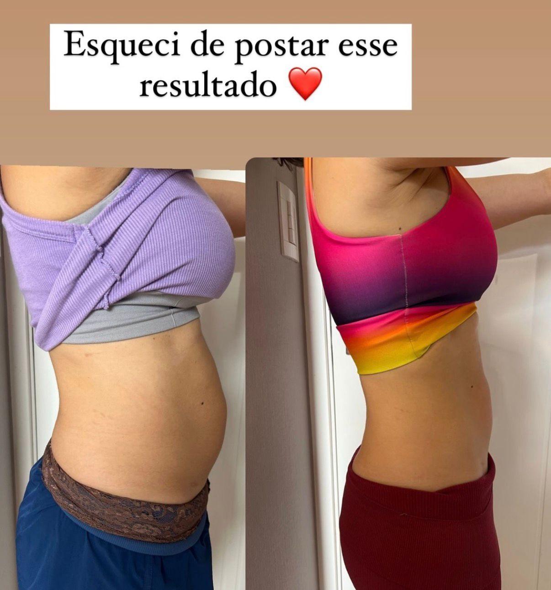
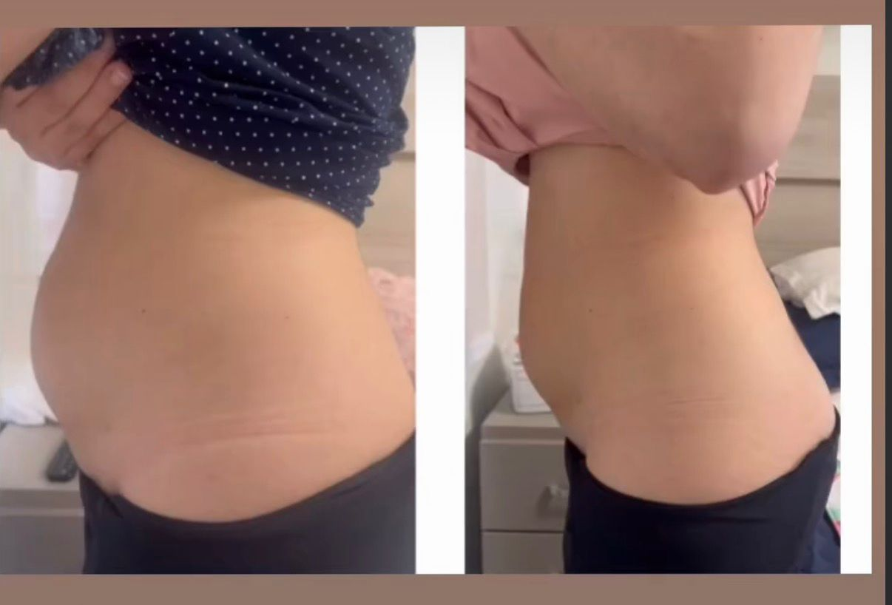
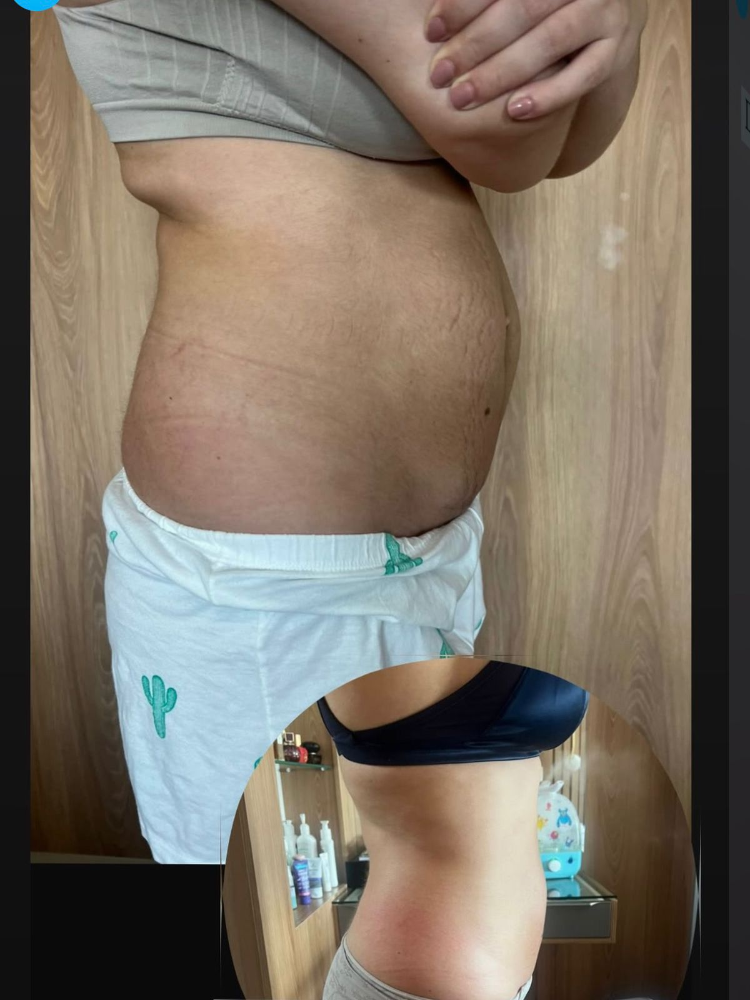
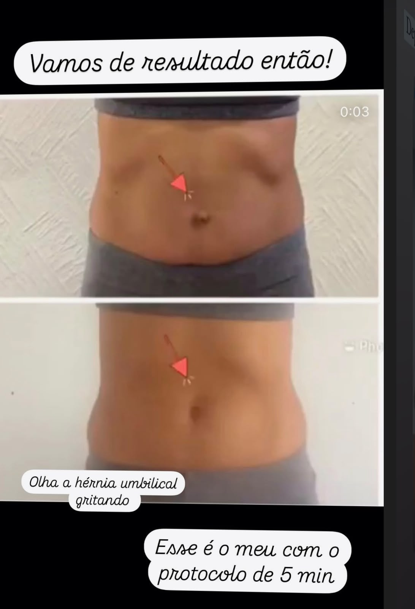

21 dias, poucos minutos por dia, em casa, com exercícios guiados por uma fisioterapeuta. Para a mulher que já tentou de tudo e ainda prende a respiração na hora da foto.
Quero garantir minha vaga




Os resultados variam de pessoa para pessoa.
Diástase é o afastamento dos músculos do meio do abdômen. Acontece muito na gestação, mas também com ganho de peso, prisão de ventre e esforço feito do jeito errado. Sem essa sustentação, a barriga projeta para frente, incha ao longo do dia e a lombar reclama.
É por isso que dieta sozinha não resolve, cinta só segura enquanto você usa e o abdominal tradicional, feito sem controle da pressão, pode até empurrar a barriga para fora.
O Desafio 21 Dias trabalha onde o problema está: no músculo profundo que funciona como uma cinta natural do seu corpo.
Toque em cada frase que tem a ver com a sua vida hoje.
Esses sinais são muito comuns em quem tem diástase, e o abdômen responde ao treino certo. Você está no lugar certo.
Quero começar hojeQuando o centro do corpo volta a funcionar, a mudança aparece no espelho e também no seu dia a dia.
A barriga deixa de projetar para frente e as roupas voltam a cair bem.
Chega de terminar o dia com a sensação de barriga estufada.
Com o abdômen sustentando, as costas param de trabalhar sozinhas.
Um core forte ajuda o assoalho pélvico nos escapes ao tossir ou rir.
Foto, praia, intimidade: sem precisar encolher a barriga.
O corpo se alinha e você se sente mais leve e confiante.
Você aprende a respirar sem jogar pressão na barriga e a se posicionar no dia a dia.
Exercícios hipopressivos e de vácuo que despertam o músculo que segura sua barriga por dentro.
Treinos que evoluem com você, do mais leve ao mais desafiador, sem risco de piorar a diástase.
Entre, faça as aulas e sinta no seu corpo. Se em 7 dias achar que não é para você, é só pedir e devolvemos 100% do valor, sem perguntas e sem burocracia.
Fisioterapeuta especialista em recuperação pós-parto. Há mais de 7 anos ajudando mães a recuperar o abdômen, a confiança e a relação com o próprio corpo.
“Eu também tive diástase e hérnia umbilical. Antes de ensinar qualquer aluna, fiz todo o protocolo primeiro em mim.”
O Desafio 21 Dias nasceu da minha própria história. Eu sei o que é olhar no espelho e não reconhecer a própria barriga, e sei o alívio de ver ela voltar. Hoje, tudo o que funcionou comigo está organizado em um passo a passo para você fazer em casa.
Continuar escolhendo roupa pela barriga, fugindo das fotos e tentando a próxima dieta, torcendo para que dessa vez seja diferente.
Dedicar poucos minutos por dia a você e, daqui a três meses, se olhar no espelho e se reconhecer de novo.
Logo após a confirmação do pagamento, você recebe os dados de acesso no e-mail cadastrado. O acesso é feito pela plataforma da Hotmart.
1 ano de acesso, no celular ou no computador, quantas vezes quiser.
Não. Basta um espaço no chão de casa e roupa confortável.
Sim. O músculo continua respondendo ao treino em qualquer fase da vida. Muitas alunas começam anos depois da última gestação.
Sim, depois que o seu médico liberar a atividade física.
A própria Tabata criou o programa depois de ter diástase e hérnia umbilical. Mesmo assim, cada caso é um caso: procure avaliação médica antes de começar. O programa não substitui o acompanhamento individual.
Pelas opções disponíveis no checkout da Hotmart: cartão de crédito (com opção de parcelamento), Pix ou boleto.